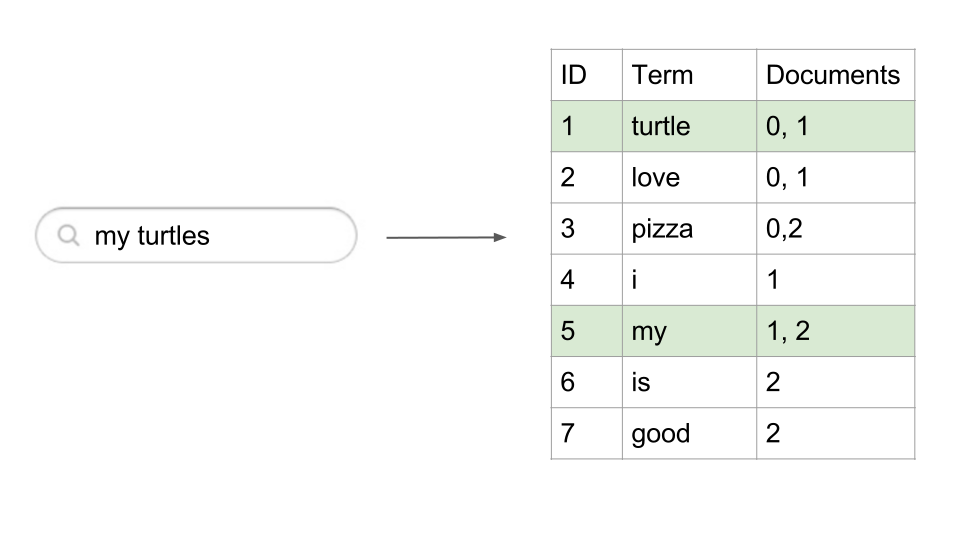

Introduction to Elasticsearch
Eirik Ola Aksnes
Agenda
- How does a search engine work
- Elasticsearch
- What is
- How to get started
- Own experience
- Use cases
How does a search engine work?
Your document collection is big!
Scan through all the documents every time you search for something?
Pre-process the documents and create an index!
Create an inverted index
Find unique terms

Search against the inverted index
Sort by relevance
How well each document matches the query

How to get started with Elasticsearch?
It is that easy
- Download Elasticsearch from www.elastic.co
- Elasticsearch only requires Java to run
wget https://download.elasticsearch.org/elasticsearch/release/...
tar -zxvf elasticsearch-2.2.0.tar.gz
cd elasticsearch-2.2.0/bin
./elasticsearch.sh
Zero configurations
- Elasticsearch just works
- No configuration is needed
- It has sensible defaults settings
Is Elasticsearch alive?
You can access it at http://localhost:9200 on your web browser, which returns this:
{
"status":200,
"name":"Cypher",
"cluster_name":"elasticsearch",
"version":{
"number":"1.5.2",
"build_hash":"62ff9868b4c8a0c45860bebb259e21980778ab1c",
"build_timestamp":"2015-04-27T09:21:06Z",
"build_snapshot":false,
"lucene_version":"4.10.4"
},
"tagline":"You Know, for Search"
}
REST API
- Elasticsearch hides the complexities of Lucene behind a REST API
- POST (create)
- GET (read)
- PUT (update)
- DELETE (delete)
DEMO - CURL works just fine

- An index is like a database
- An type is like a SQL table
What is stored in Elasticsearch?
JSON documents!
{
"title": "Introduction to Elasticsearch",
"date": "2016-04-07",
"author": "Eirik Ola Aksnes"
}
Let's do an example - A BigOne pizza website
- We are building a website to find BigOne pizzas
- We have a collection of BigOne pizzas

- We want simple text based searching

How to store the pizzas?
The act of storing data in Elasticsearch is called indexing.
$curl -X POST localhost:9200/big-one/pizza/1 --data
'{
"name": "California Sunset Chicken"
}'
$curl -X POST localhost:9200/big-one/pizza/2 --data
'{
"name": "American Bacon"
}'
$curl -X POST localhost:9200/big-one/pizza/3 --data
'{
"name": "Classic American"
}'
Get
$curl -X GET localhost:9200/big-one/pizza/1
Result:
{
"_index":"big-one",
"_type":"pizza",
"_id":"1",
"_version":1,
"found":true,
"_source":{
"name":"California Sunset Chicken"
}
}
Update
$curl -X PUT localhost:9200/big-one/pizza/1 --data
'{
"name":"California Sunset Chicken Awesome"
}'
Result:
{
"_index":"big-one",
"_type":"pizza",
"_id":"1",
"_version":2,
"created":false
}
Delete
$curl -X DELETE localhost:9200/big-one/pizza/1
So far
- All we have is NoSQL document store which is
- Fast
- Scalable
- Easy to use
- Now to the really cool part, full-text search...
Full-text search
Find all the pizzas that contains the word "American"
$curl -X GET localhost:9200/big-one/pizza/_search?q=American
Full-text search - Result
{
"took":4,
"timed_out":false,
"_shards":{
"total":5,
"successful":5,
"failed":0
},
"hits":{
"total":2,
"max_score":0.19178301,
"hits":[
{
"_index":"big-one",
"_type":"pizza",
"_id":"2",
"_score":0.19178301,
"_source":{
"name":"American Bacon"
}
},
{
"_index":"big-one",
"_type":"pizza",
"_id":"3",
"_score":0.19178301,
"_source":{
"name":"Classic American"
}
}
]
}
}
Alternate Approach
- Search using Query DSL
Full-text search
Find the pizzas with a name that contains the word "American"
$curl -XGET localhost:9200/big-one/pizza/_search -d
'{
"query":{
"match":{
"name":"American"
}
}
}'
Full-text search - result
{
"took": 8,
"timed_out": false,
"_shards": {
"total": 5,
"successful": 5,
"failed": 0
},
"hits": {
"total": 2,
"max_score": 0.19178301,
"hits": [
{
"_index": "big-one",
"_type": "pizza",
"_id": "2",
"_score": 0.19178301,
"_source": {
"name": "American Bacon"
}
},
{
"_index": "big-one",
"_type": "pizza",
"_id": "3",
"_score": 0.19178301,
"_source": {
"name": "Classic American"
}
}
]
}
}
Own experience with Elasticsearch
Alt Mulig Mat
- Text based searching
- Structured searching (get all "Dessert" recipes)

How to use Ealsticsearch?
Commonly used in addition to another database...

Use Cases
What can Elasticsearch be used for?
For Big Data
Github uses Elasticsearch to search 20TB data, including 1.3 billion files and 130 billion code lines
Text search
With filtering, aggregations, highlightning, pagination...

Pure Analytics
Count things and summarize your data, lots of data, often on timestamped data!

Centralized Logging
Logs > Logstash > Elasticsearch > Kibana

Geolocation

The end!
- It is easy to start building advanced search functionality
- No configuration is needed
- Just add data and start searching